This is a bit of an ‘infrastructure’ post. Helping develop a working environment for future projects.
I prefer storing data in a database vs txt files. But that’s me.
Educators
My primary source for this is SQLite’s quickstart page website.
Tool
I briefly considered three databases for this:
Oracle Lite
- Looks like this requires you to setup a mini-server function on your PC. Sounds like a pain.
- Looks like this requires you to setup a mini-server function on your PC. Sounds like a pain.
Microsoft Access
- This is my bias. When it was demo-ed to me 10ish years back. It felt like it was a toy. SQL query tool and database in one. (Decade old memories can be hazy. So sorry if that’s inaccurate.)
- This is my bias. When it was demo-ed to me 10ish years back. It felt like it was a toy. SQL query tool and database in one. (Decade old memories can be hazy. So sorry if that’s inaccurate.)
SQLite
- Only option that my google-fu skills found that fit the bill for what I’m looking for.
- A real, queryable database
- easy to setup
- no server
- doesn’t feel like a toy.
- Only option that my google-fu skills found that fit the bill for what I’m looking for.
1) Getting Started
Head on over to SQLite.
You’ll want a sqlite-tools…zip file.
 I wish there were a tools file for 64 bit. But at the time there’s only one for 32 bit.
I wish there were a tools file for 64 bit. But at the time there’s only one for 32 bit.
I have no idea what the 64 bit DLL is. I tried opening it and it was gibberish.
2) Choose Your Directory
Open the zip file, and move its contents to wherever you want to house this database.
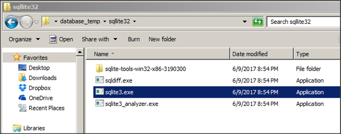
- In this example, I’m storing it in
/database_temp/sqlite32/
Go ahead and run sqlite3.exe
3) Create Your Database
A Command Prompt/DOS window should open up and will run a little code.
You’re now ready to create your database.
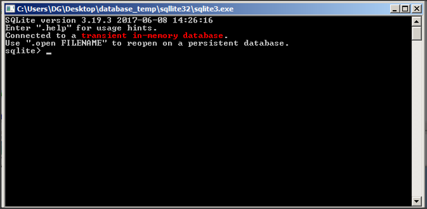
To create your database, type: .open [database name].db
- In theory you don’t need this tools exe.
You could open the command prompt, navigate to this folder, then typesqlite3.
But I’m not sure which file that runs off of, or if that only works because I’ve already run this .exe.
You should now see a file named [database].db appear in the directory.
In my case, I named it example1
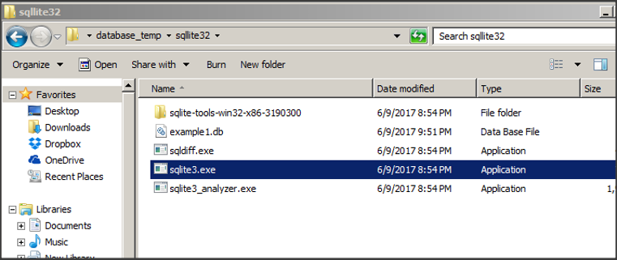
4) Connect to the Database
You can now start typing SQL directly into the DOS window.
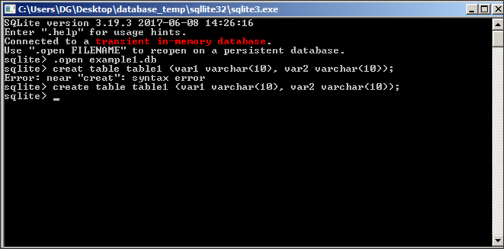
Isn’t this fun???
How about we setup an ODBC connection, so we can use sane tools instead?
- ODBC is how many/most tools connect to a standard database.
- Basic methodology is:
- Download the driver for that type of database
- Fill out connection information such as ‘where is the database’
ODBC Drivers
I downloaded the SQLite ODBC drivers from ch-werner.de.
It’s the location that winsql (The SQL tool I prefer) links to for SQLite drivers.
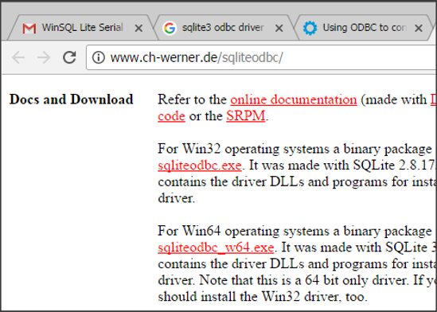
- Grab and run sqliteodbc.exe and sqliteodbc_w64.exe
Get to the ODBC Managers
Ok, drivers are installed. Now to get to the ODBC managers and setup the connections.
- You have two ODBC managers. One for 32 bit, one for 64 bit. In theory you’ll only need the 64 bit. But some tools still use the 32 bit ODBC connection.
Best to update both.
64 bit
This is farily simple.
Control pannel > System and Security > Administrative Tools
Open Data Sources (ODBC)
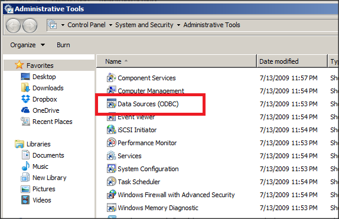
32 bit
To get here is a bit easier, and less elegant. Click the start menu, then paste this text into the search field.
%windir%\SysWOW64\odbcad32.exe
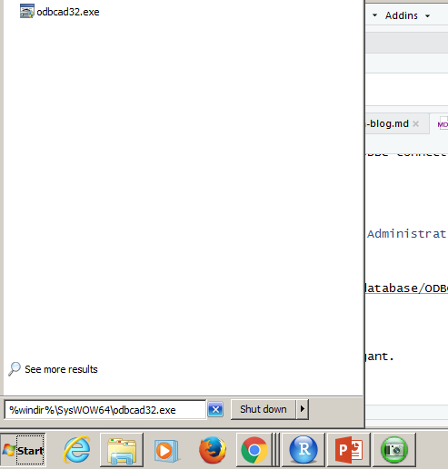
- I said it was less elegant…
Configure the ODBC Managers
Now that you have the ODBC Manager open, go ahead and switch to the System DSN tab.
- You could do this in the
User DSNtab. But by habit I useSystem DSN.
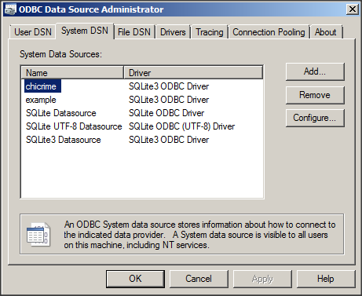
Time to Add a new connection…
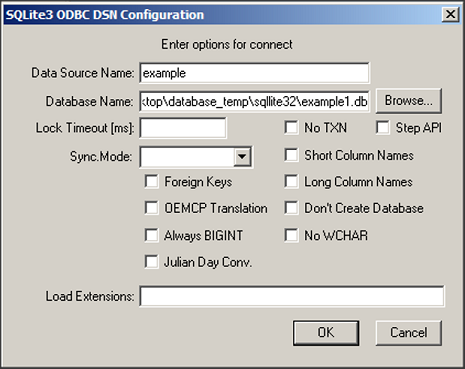
Fill this out as appropriate for the database you just created.
- Data Source Name: The name you want to call this connection
- Database Name: The path and name of the database you just created.
5) Use the Database
Now that your ODBC connection has been established, let’s get to work.
You can connect via your sql tool of choice, just as if it were a teradata or sql server database.
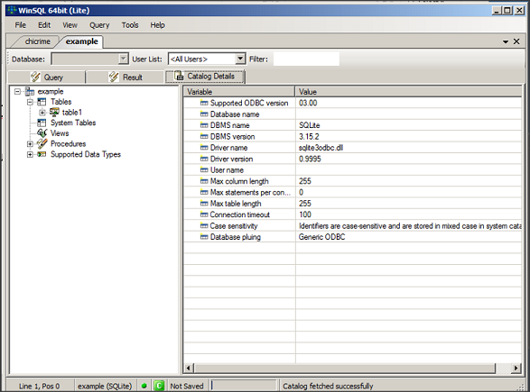
But data scientists/analysts were not meant to only query.
Since you have an ODBC connection, you can also connect using any tool that’s able to use ODBC connections, such as R or Python.
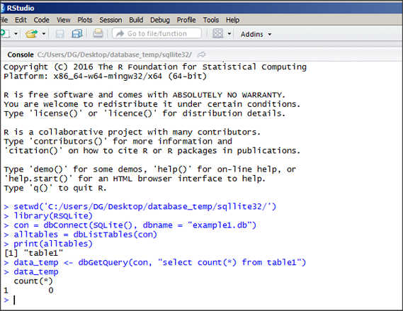
Now we’re cooking with gas!
Final Notes
- There’s probably a smoother way to do this. And clearly there’s a way to make a 64 bit version of the database.
- But this is the level of knowledge I currently have, and it’s enough for my minor needs.